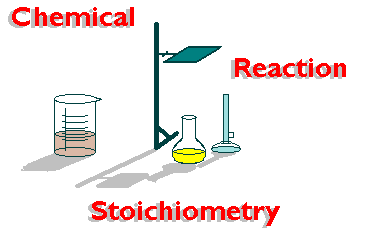

A look at stoichiometry
Stoichiometry is chemistry that involves using relationships between reactants and products in a chemical reaction to determine certain data such as grams moles or atoms
Stoichiometry uses balanced chemical equations and ratios to solve problems.
In order to do stoichiometry you first need to balance the equation. Then you convert the units given to moles. Then using the mole ratio, calculate the moles of substance yielded by the reaction. Then just convert the moles to the units you wish to calculate.